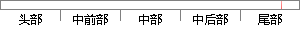

代码的规范性、可读性上主要体现在文档的规范与注释的填写。
片段位置图

相似结果|
相似片段 1：。47e．客户满意度：客户对编码人员技术支持的满意程度。f．编码规范性：指编码的可读性，即编程语言的选择，函数、类和变量是否规范的命名，是否有重要代码的注释等。g．文档规范性：指编码人员在完成代码的同时
相似片段 2： cIsOIdobj object objNew5．1．3文档格式规范格式规范包括代码格式规范、编码一致性规范、注释规范以及文档规范等。代码格式规范主要是针对程序代码的规范性要求，包括代码格式，编程
|
※ 片段修改建议 ※
近似词参考：- 主要：首要 重要
- 规范：范例
- 注释：解释
系统自动生成语句：代码的范例性、可读性上首要体现在文档的范例与解释的填写。
注：本片段修改建议为系统自动生成，仅供参考。